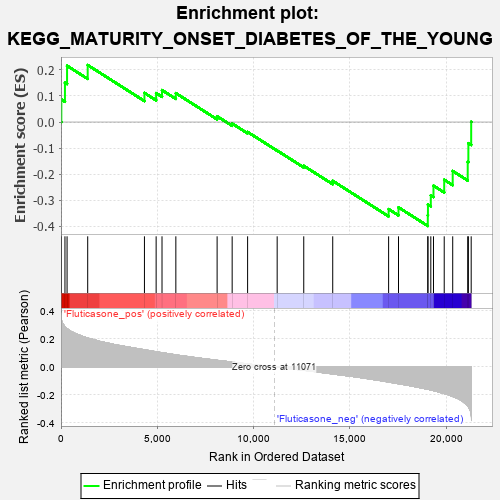

| | | Dataset | GSEA_expr_Flu.GSEA_timepoint.cls#Fluticasone |
| Phenotype | GSEA_timepoint.cls#Fluticasone |
| Upregulated in class | Fluticasone_neg |
| GeneSet | KEGG_MATURITY_ONSET_DIABETES_OF_THE_YOUNG |
| Enrichment Score (ES) | -0.39893594 |
| Normalized Enrichment Score (NES) | -1.3637308 |
| Nominal p-value | 0.082987554 |
| FDR q-value | 1.0 |
| FWER p-Value | 0.851 |
Table: GSEA Results Summary

Fig 1: Enrichment plot: KEGG_MATURITY_ONSET_DIABETES_OF_THE_YOUNG
Profile of the Running ES Score & Positions of GeneSet Members on the Rank Ordered List
| PROBE | DESCRIPTION
(from dataset) | GENE SYMBOL | GENE_TITLE | RANK IN GENE LIST | RANK METRIC SCORE | RUNNING ES | CORE ENRICHMENT | | 1 | MNX1 | NA | | | 18 | 0.339 | 0.0865 | No |
| 2 | PAX4 | NA | | | 205 | 0.285 | 0.1510 | No |
| 3 | GCK | NA | | | 315 | 0.272 | 0.2159 | No |
| 4 | SLC2A2 | NA | | | 1386 | 0.206 | 0.2187 | No |
| 5 | MAFA | NA | | | 4331 | 0.122 | 0.1117 | No |
| 6 | NEUROD1 | NA | | | 4938 | 0.107 | 0.1109 | No |
| 7 | ONECUT1 | NA | | | 5243 | 0.101 | 0.1225 | No |
| 8 | HES1 | NA | | | 5961 | 0.085 | 0.1108 | No |
| 9 | PKLR | NA | | | 8103 | 0.046 | 0.0221 | No |
| 10 | FOXA3 | NA | | | 8884 | 0.034 | -0.0058 | No |
| 11 | HNF4G | NA | | | 9686 | 0.021 | -0.0381 | No |
| 12 | HNF1B | NA | | | 11220 | -0.002 | -0.1096 | No |
| 13 | HNF4A | NA | | | 12600 | -0.024 | -0.1681 | No |
| 14 | HNF1A | NA | | | 14104 | -0.050 | -0.2259 | No |
| 15 | BHLHA15 | NA | | | 17005 | -0.108 | -0.3344 | No |
| 16 | IAPP | NA | | | 17518 | -0.120 | -0.3275 | No |
| 17 | NKX6-1 | NA | | | 19039 | -0.160 | -0.3578 | Yes |
| 18 | FOXA2 | NA | | | 19047 | -0.160 | -0.3169 | Yes |
| 19 | NKX2-2 | NA | | | 19195 | -0.164 | -0.2815 | Yes |
| 20 | NEUROG3 | NA | | | 19334 | -0.169 | -0.2444 | Yes |
| 21 | PAX6 | NA | | | 19891 | -0.190 | -0.2216 | Yes |
| 22 | NR5A2 | NA | | | 20332 | -0.211 | -0.1879 | Yes |
| 23 | INS | NA | | | 21111 | -0.278 | -0.1530 | Yes |
| 24 | PDX1 | NA | | | 21145 | -0.284 | -0.0814 | Yes |
| 25 | HHEX | NA | | | 21291 | -0.345 | 0.0007 | Yes |
Table: GSEA details [plain text format]
Fig 2: KEGG_MATURITY_ONSET_DIABETES_OF_THE_YOUNG
Blue-Pink O' Gram in the Space of the Analyzed GeneSet
Fig 3: KEGG_MATURITY_ONSET_DIABETES_OF_THE_YOUNG: Random ES distribution
Gene set null distribution of ES for KEGG_MATURITY_ONSET_DIABETES_OF_THE_YOUNG